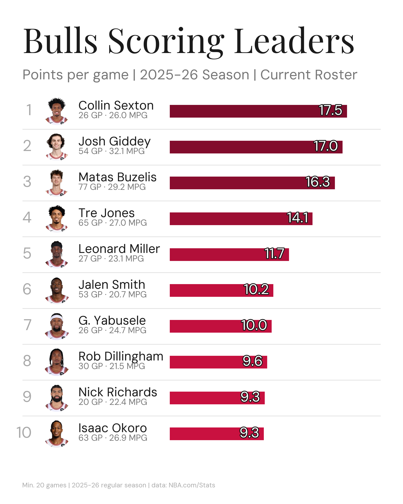
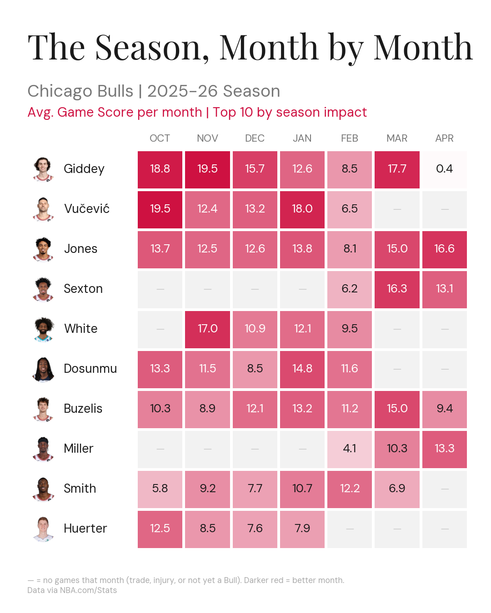
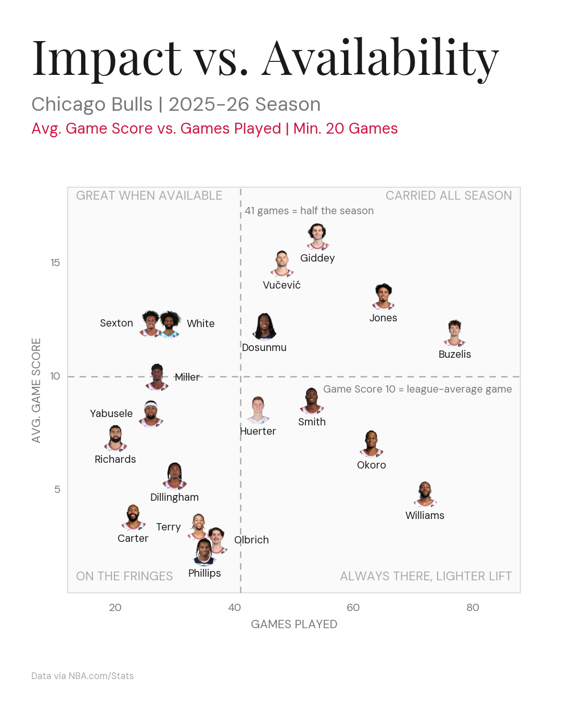
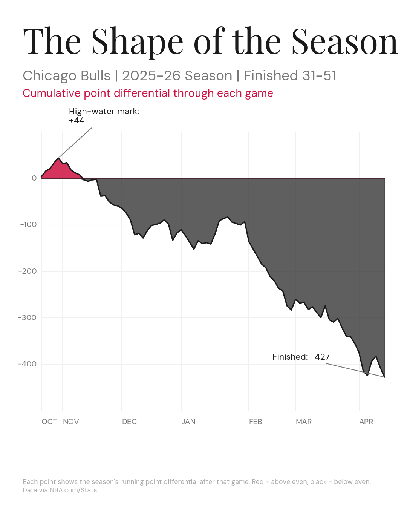
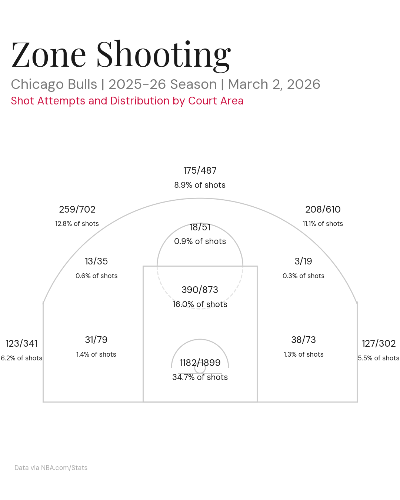
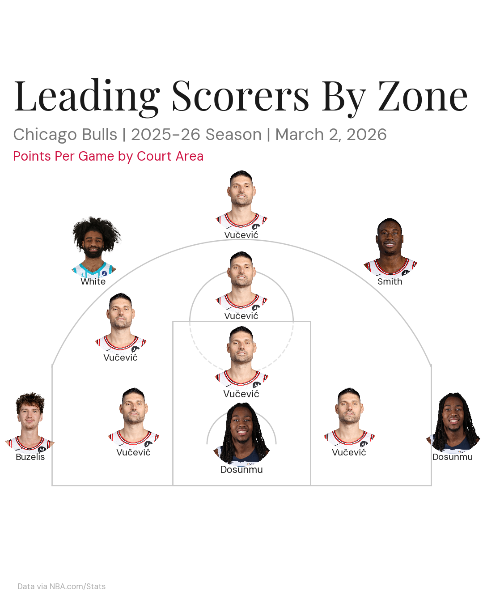
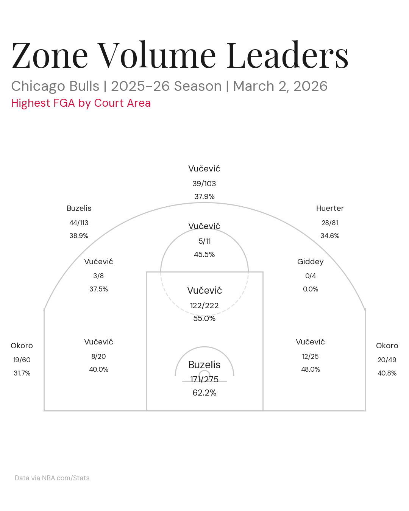

Shot Profile Evolution
How the Bulls' shot mix moved across eras — two (or four) season courts on one shared frequency scale, mid-range dying as the arc takes over. Kirk's “two eras, one canvas, one unmistakable conclusion” model; court grammar earns its place because location is the question.
Notes: data is reachable today — every shot fetcher takes a season string, so past seasons are one call each (slow; cache per-season pulls). Design questions: which eras (e.g., 2010-11 Rose vs 2025-26), and frequency vs efficiency as the color.
Data: get_team_shots(season=…) · Source: playbook “Spatial and style evolution” lane + Kirk spatial-comparison reference
Most-Played Five-Man Lineups
The Basketball University lineup board in Bulls clothing: one row per five-man unit — five headshots, a big net-rating pill, a possession-count badge — ranked by possessions played. Dense but obvious.
Notes: direct adaptation of the saved BBU reference the playbook calls the target grammar for lineup boards. Data is nearly free: get_lineup_stats() already hits LeagueDashLineups with group_quantity=2 — a 5-man variant is a parameter change. Keep the min-possession threshold visible.
Data: get_lineup_stats() (extend to 5-man) · Source: playbook “lineup board” reference
Where This Ranks — Franchise Company
A current Bulls season placed on an all-time franchise leaderboard — e.g., Giddey's 2025-26 among the best Bulls guard seasons ever — with the current player's row highlighted in red. Turns a season stat into historical company.
Notes: first card in the historical lane. Same builder as the F5 leaderboard; the new work is the data step (franchise season-level history via NBA API player career stats or a basketball-reference pull — source decision needed).
Source: playbook “Historical Rankings, Records & Rarity” lane
Same Age, Different Era
Buzelis at 21 next to past Bulls at 21 — Rose, Butler, LaVine, Jordan — on one shared-scale board (per-36 scoring, efficiency, usage). The fairest version of “is the kid ahead of schedule?”
Notes: playbook prompt starter (“players at the same age or career stage”). NBA API career stats cover it; era context (pace, league averages) should ride along as a footer caveat.
Source: playbook “Player Comparisons” lane
Cap Share by Era
Top salary as a share of the cap, season by season — how concentrated Bulls payroll was under Jordan, Rose, Butler, LaVine, and now. Cap share, never raw dollars, so decades stay comparable.
Notes: opens the salary lane. Blocker is the data source — no salary data in the repo; needs hoopshype / spotrac / basketball-reference contracts (source decision before mocking).
Source: playbook “Salary, Cap & Roster-Building History” lane
Bulls Draft History Grid
Every Bulls first-round pick since 2000 in one grid — headshot, pick number, and an outcome measure (games or win shares as a Bull). The Kirk history-grid grammar: repetition carries the story.
Notes: opens the drafts & transactions lane. NBA API draft history endpoint exists; outcome metric choice (and its fairness for recent picks) is the design question.
Source: playbook “Records, Drafts & Transactions” lane
{kind=link}

F5 Leaderboard — Scoring Leaders
The F5's engagement format in Bulls clothing: top-10 PPG, headshots, magnitude-colored bars, outlined values, threshold in the footer. First output of the shared craft helpers.
Notes: exports at 2160×2700 so text survives IG compression. Swap STAT_COL for any stat — layout stays put. Two views rendered; roster view shown.
Script: prototypes/f5_leaderboard.py · Source: F5 technique notes

Bulls Two-Man Lineups
The "Doubling Up" format: ten most-used Bulls pairs with off/def/net rating, net rating color-scaled around zero. Only Vučević + Jones broke even; Okoro pairings bled double digits.
Notes: first table-format post — new capability via plottable. Reusable: any stat table can ship through this layout now.
Script: prototypes/f5_lineup_table.py · Data: get_lineup_stats()
Bulls Percentile Cards
One mini-card per rotation player: headshot, name plate, and 3–5 percentile bars vs league (scoring, rebounding, playmaking, defense). NBA Jam rating-card energy.
Notes: F5-derived (his NBA Jam ref small-multiple). Needs league-wide percentile baselines — a real data step. Rounded bars via FancyBboxPatch.
Source: F5 technique notes #8
Headshot Stat-Card Grid
A grid of player tiles, each carrying one big color-coded number (e.g., 3P% among qualifying Bulls). His catch-and-shoot bigs post, Bulls-ified.
Notes: simplest parked idea — craft helpers cover most of it. Good "everyone at a glance" complement to the top-10 leaderboard.
Source: F5 technique notes #1–2
Season Trend Small Multiples
One mini trend-line per Bulls player (rolling Game Score), shared axes across all panels, ordered by season average. The season's shape, player by player.
Notes: F5's shared-scale facet trick (dummy min/max data) noted in the technique doc. Pairs naturally with "The Shape of the Season" timeline.
Source: F5 technique notes #7
League Leaderboard, Bulls Highlight
The eye-candy leaderboard pointed league-wide at a niche stat, with any Bulls player's row highlighted in red. Reach format: "where does our guy rank?"
Notes: niche stats via pbpstats.com free API (his Z-Bounds source). Same builder as the Bulls leaderboard — data change only.
Source: F5 technique notes #10
Availability Grid
Players × games grid: played / rested / injured cells across the season. The "why did this season die" post — availability is the Bulls' story.
Notes: F5 has an availability-chart tutorial in the archive (2021). Cached game logs cover most of the data; injury reasons need a source decision.
Source: F5 technique notes (tutorial index)
{kind=link}

The Season, Month by Month
Players × months heatmap of avg Game Score. The gray cells tell the trade-deadline story without words: Vŭčević, White, Dosunmu, Huerter go dark after FEB as Sexton and Miller light up.
Notes: strongest storyteller of the 2026-07-04 batch. Giddey's 0.4 April cell is an honest small-sample oddity — keep.
Script: prototypes/three_options.py
{kind=link}

Impact vs. Availability
Avg Game Score vs games played, headshots as points, plain-language corner labels. Only Jones and Buzelis lived in "Carried All Season"; Giddey and Vŭčević carried harder but for ~50 games.
Notes: best debate-bait of the batch. Thresholds visible on the graphic: 41 games = half season, Game Score 10 = league-average game.
Script: prototypes/three_options.py
{kind=link}

The Shape of the Season
Rolling 10-game point differential compresses 31-51 into one silhouette: treading water to December, the +5.5 January surge, the post-deadline cliff to −18.1.
Notes: most reusable format — the "season fingerprint" shape could compare eras side by side (1996 vs 2026) when the historical lane opens.
Script: prototypes/three_options.py

Most Impactful Bulls
Ranked avg Game Score leaderboard with headshots, shared-scale bars, and PPG / TS% / GP context columns. First board-format post; Giddey leads at 16.2.
Notes: two views rendered (all players + current roster). CDN headshots show a player's current team — one more reason the roster view matters.
Script: impact_board.py
{kind=link}

Zone Shooting Stats
Team FGM/FGA + FG% per court area on the 12-zone map. Both current @chicagobullsdata posts use this format (season + vs OKC).
Notes: clean work, but the playbook flags the limitation: numbers without comparison, court as default canvas.
Script: make_zone_shooting.py
{kind=link}

Zone Leaders (PPG / Frequency)
Headshot per court zone: who scores most (PPG mode) or shoots most often (frequency mode) from each area.
Notes: made pre-playbook; never posted. Court grammar is justified here — location is the actual subject.
Script: make_zone_leaders.py
{kind=link}

Zone Volume Leaders
Highest-FGA shooter per zone with FGM/FGA and FG% — the "who actually takes these shots" view of the court.
Notes: made pre-playbook; never posted.